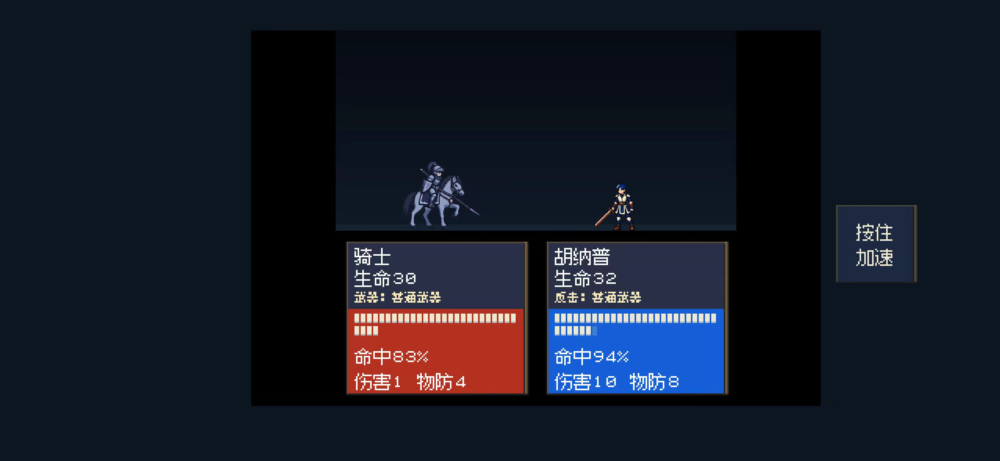
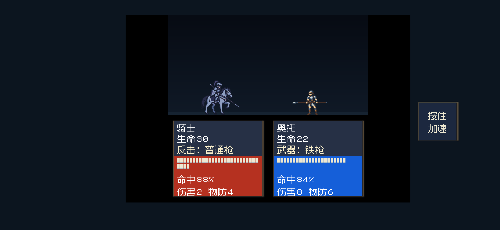
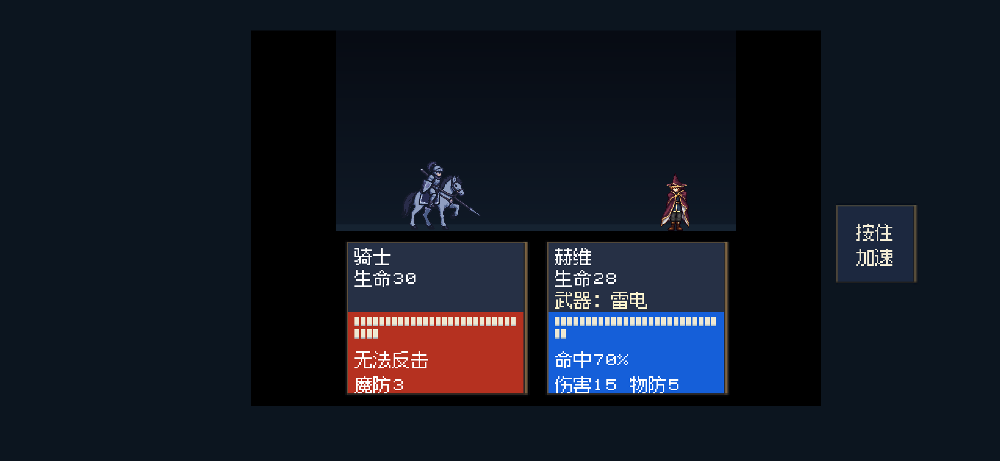
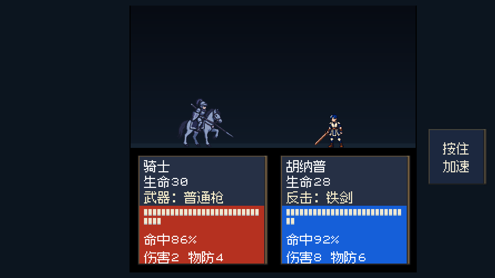
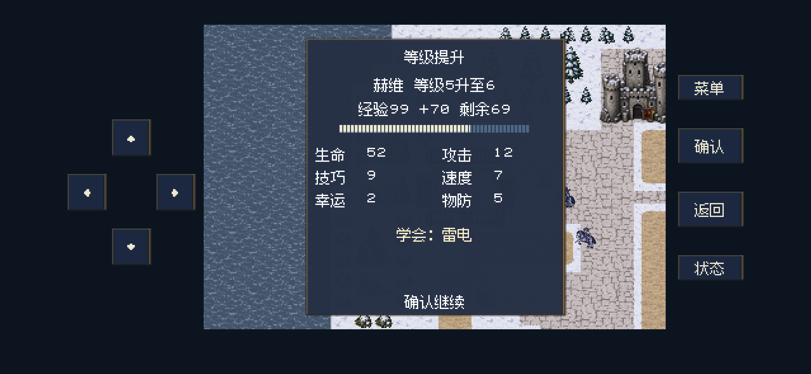
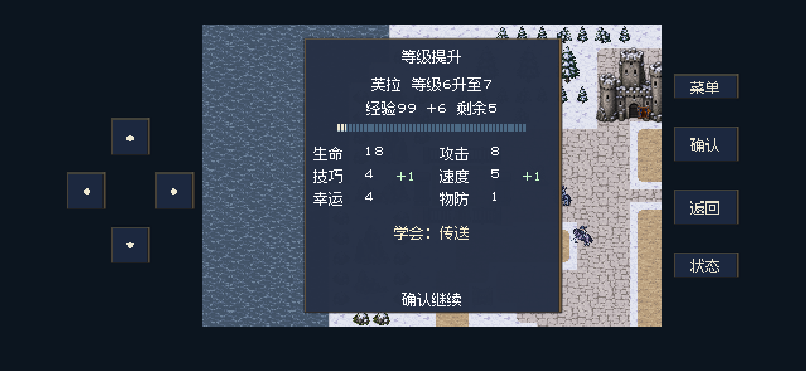
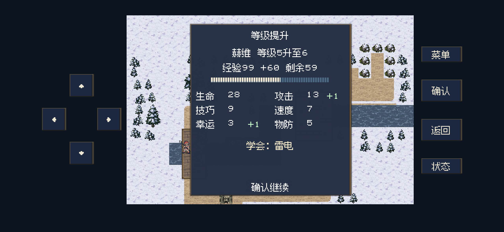
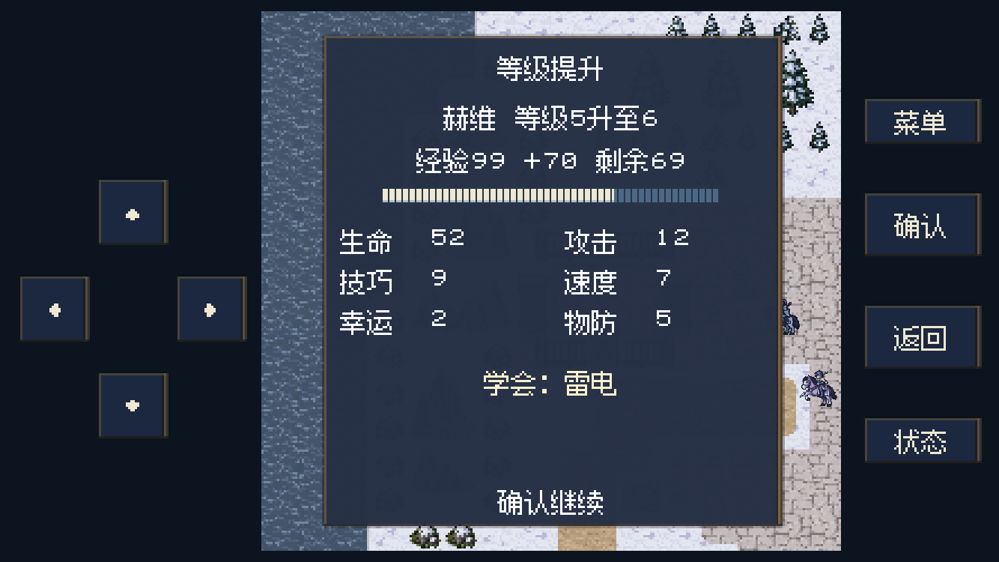

复仇与回忆 · 正式战役 actual · 2026-11-02
武器名称与升级学法术提示
两项均已查明并修改：战斗武器行显示实际攻击名称，字号从8提高至12逻辑像素；升级页突出显示本次新学会的全部法术，包含攻击与辅助法术。未安装或更新iPhone。
为何铁剑显示成“普通武器”
铜、铁剑枪共用底层0号普通攻击，铜、铁弓共用1号攻击。数值计算已经叠加真实装备配置，但战斗名称直接用底层攻击编号查表，因此显示了“普通武器”。这是名称读取问题，武器加成已生效。
名称现在与数值使用同一份实际攻击配置：装备铁剑时显示铁剑，铜铁枪弓同理；法器施法显示火球、雷电等实际法术；守卫远反使用投枪或引霆剑时显示本次反击武器。盾、戒指及不适配武器不会冒充攻击武器，空手按职业显示普通剑、普通枪或普通弓。
武器行由8像素小字改为12像素常规字，并调整行距和血条区域，保留与生命、背景边框和下方数值的间距。
武器行修改前后

修改前：普通武器、小字号修改后：反击铁剑、12像素常规字铁枪攻击名称

雷电与本次远程反击

较窄手机布局中的武器行

雷电何时学会
个人法术随实际升级推进训练记录，施法本身不增加学习进度。当前人物入队时训练记录为0，因此高等级加入者也从入队后开始累计。普通进阶可能重置显示等级，学习仍按保留的训练进度判断。
| 角色 | 雷电来源 |
|---|
| 赫维 | 入队后累计升级3次；未转职时通常由3级升到6级时学会。 |
| 艾琳 | 入队后累计升级7次；未重置等级时通常到8级学会。 |
| 莉莎、诺娅 | 入队时已经会雷电，不属于本次升级新学。 |
原逻辑已经把新学法术写入升级回执，但升级界面仅画属性成长和经验，漏掉了“学会”信息。学习门槛与训练记录保持原设计；本次补齐显示。
所有升级新学法术统一提示
升级页会以较亮文字显示“学会：法术名”，一次多项完整列出。战斗、治疗、通关、补练及MAP经验产生的现有升级回执统一使用这一页面；含传送、恢复等辅助法术。已经拥有或本次没有新学的法术不会误报。确认后沿原战斗或战后奖励流程继续。
战斗升级学会雷电

治疗升级学会传送

补练升级学会雷电

一次学会多项法术
较窄手机布局中的升级提示

截图是后台Godot手机布局渲染，不是真机截图。升级边界采用隔离的测试角色与经验值，画面里的52生命等数值用于验证显示，不代表改动了角色模板或玩家存档。一次多项使用专门的显示夹具；当前实际升级按个人学习表获得法术。
验证范围
52项无窗口定向检查、119项后台呈现与布局检查通过。覆盖六种铜铁武器、不适配装备、盾、法器、反击武器选择、名称查询不改变数值、赫维的三次升级门槛、真实交锋和治疗升级、补练结算及存读档保留新学信息、全部个人学习表中的法术名称、一次多项、无新学时不误报，以及2556×1179和1334×750两种手机布局。
本轮没有重新通关全战役。通关与MAP沿用同一升级回执及通用提示界面，未分别重打关卡验证。既有角色数值、学习条件、经验、伤害和装备相容性规则未调整。
定向检查 · 后台布局检查 · 学习条件数据 · 图片尺寸与体积 · 验证脚本